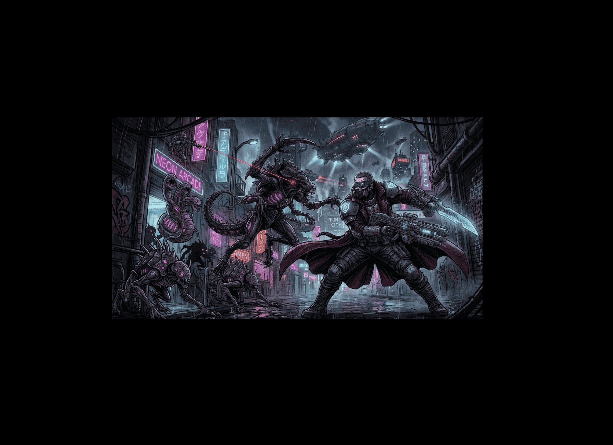

📖 DLEGION WARS
Manuale Tattico del Comandante

Benvenuto, Comandante.
DLegion Wars non è un semplice gioco di battaglie a turni. È una spietata scacchiera tattica dove la fortuna ha poco spazio e ogni tua scelta, dalla personalizzazione delle tue truppe al posizionamento tattico sul campo, determinerà la tua sopravvivenza... e forse la tua vittoria.
Che tu stia affrontando i tuoi amici in brutali schermaglie, orchestrando il dominio del mondo in una Campagna Strategica, o sopravvivendo a orrori sconosciuti in modalità Cooperativa, una sola regola vale sempre:
La fortuna finisce, l'abilità no.
🎖️ LA FILOSOFIA DI DLEGION WARS
Prima di scendere in campo, è importante comprendere la filosofia del gioco.
In DLegion Wars, il tuo peggior nemico non è la sfortuna, ma un piano mal congeniato. A differenza dei classici giochi di strategia, qui eliminiamo l'incertezza del dado: se vedi il nemico e sei a portata, lo colpisci. Questo trasforma ogni partita in una sfida di puro ingegno, simile agli scacchi ma con la profondità di un moderno gioco di guerra. Il successo dipenderà dalla tua capacità di prevedere le mosse avversarie e di creare sinergie tra i tuoi agenti e le loro abilità speciali.
-
Non è un "prodotto commerciale", ma un gioco realizzato al solo scopo di appagare i giocatori: Diverso dalla massa negli intenti e nel profondo, vuole dare ai giocatori un esperienza che premia l'abilità e l'impegno, grazie alle infinite possibilità i giocatori ogni singola volta dovranno trovare la miglior tattica per quel caso specifico e irripetibile. Inoltre le tre modalità (battaglia, campagna e coop) si adattano a tre tipologie di gruppi di gioco, in modo da soddisfare tutti e tutte le tempistiche: da partite di 10 minuti a serate di strategia o avventure stile gioco di ruolo! La sua struttura "facile da imparare, difficile da dominare" lo rende adatto ai neofiti ed apprezzato dai veterani. In ultimo una turnazione veloce e battaglie scandite da un timer rendono l'azione sempre eccitante e concitata, senza mai cadere nella "paralisi da analisi".
L'obiettivo reale del gioco è solo divertire ed appassionare i giocatori, offrendo una sfida sempre nuova, interessante ed irripetibile, che vi porterà a dire con entusiasmo: "ancora una partita, che provo una nuova configurazione!" .
-
Nessun Lancio di Dadi (Determinismo): Nel combattimento tattico di questo gioco non esiste la "probabilità di colpire". Dimentica i turni frustranti in cui un piano perfetto fallisce per un lancio sfortunato: se un nemico è a portata e la visuale è libera, il tuo colpo andrà a segno. Sempre. Se il tuo Danno è 3 e la sua Vita è 3, il nemico è a terra. Questo sistema premia il posizionamento, l'ingegno e la pura abilità. Calcolare una sequenza di mosse impeccabile o anticipare la contromossa dell'avversario regala una soddisfazione che nessun tiro di dado da 20 può eguagliare. Esiste comunque un marcato "fattore sorpresa" rappresentato dalle infinite possibilità di scelta da parte dei nemici, che spesso sorprenderanno anche i giocatori più esperti. Che tu sia un amante del calcolo perfetto o un veterano dei giochi di fortuna, ti sfidiamo a metterti alla prova: scoprirai quanto può essere elettrizzante attendere le mosse dell'avversario sperando in un suo passo falso!
-
Personalizzazione Totale: Non hai truppe predefinite. Con il tuo budget iniziale scolpirai ogni singolo agente: creerai lenti ma letali tank d'assalto, o fragili cecchini ultra-rapidi? ...o magari creerai tanti agenti bilanciati ed intercambiabili? Totale libertà di scelta... e relative conseguenze. I giocatori si appassionano ai loro agenti, che possono personalizzare sia a livello estetico che funzionale, in stile gioco di ruolo, fino a creare veri e propri "war party" più o meno specializzati a seconda delle strategie e dei gusti.
-
⚛️Sinergie Devastanti Imprevedibili: "In DLegion Wars, la fortuna non è che un'ombra sbiadita davanti all'infinità delle combinazioni possibili."
L'intreccio tra Punti Azione, Bonus Terreno e Carte Strategiche genera quello che chiamiamo Caos Deterministico. Non esiste la casualità del dado, ma esiste l'imprevedibilità dell'intelletto: miliardi di combinazioni sono già scritte nella geometria della mappa, in attesa che la tua volontà le scateni nel momento esatto.
In questo ecosistema, non esiste una "strategia imbattibile" universale. Esiste solo la mossa perfetta per quel frammento di tempo, l'intuizione fulminea capace di vedere un varco dove gli altri vedono solo un muro. Ogni azione ha la sua contromossa, e ogni vantaggio può sgretolarsi davanti a una sinergia inaspettata.
È questa la vera essenza del comando: il fiato sospeso prima di un'esecuzione impeccabile che ribalta un destino segnato. Non aspettare che sia un dado a salvarti: progetta il tuo miracolo tattico ed assapora una vittoria meritata!
⚙️ COME SI GIOCA
La Battaglia è il cuore del gioco e si svolge su una griglia esagonale. Ogni giocatore controlla il proprio Quartier Generale (HQ) e una squadra di Agenti da lui selezionati. L'obiettivo è distruggere le Basi nemiche o annientare tutte le forze avversarie.
1. La Fase di Setup (Reclutamento)
Prima di scendere in campo, devi comporre la tua squadra. Non esiste una "squadra perfetta", ma esistono ruoli specializzati. Con i tuoi 30 crediti iniziali, puoi scegliere se schierare pochi agenti d'élite (molto resistenti e letali) o un piccolo esercito di reclute sacrificabili per circondare l'avversario. La battaglia inizia con 30 Punti Setup (Crediti). Ogni Agente costa di base 4 Punti (con statistiche minime 1-1-1-1). Puoi spendere i punti rimanenti per potenziare 4 attributi chiave:
- ❤️
VITA (HP): I punti ferita dell'agente (Max 5).
- 👟
PASSI (MOV): Quanti esagoni può percorrere con un'azione di movimento (Max 3).
- 🎯
TIRO (RNG): La gittata delle sue armi (Max 9).
- ⚔️
DANNO (DMG): I danni inflitti con un singolo attacco (Max 4).
Infine, dovrai selezionare segretamente 3 Carte Strategiche (Abilità monouso) che porterai in battaglia.
2. Il Turno Tattico
Quando è il tuo turno, ogni tuo Agente in vita dispone di 3 Punti Azione (AP). La gestione dei Punti Azione (AP) è il cuore del gioco, la vera potenza risiede nella libertà di sequenza: puoi muovere un agente, passare a un altro per distruggere un muro, e poi tornare al primo per sparare nel varco appena aperto. Non sei obbligato a finire le azioni di un agente prima di passare al successivo. Impara a "spezzare" i turni per massimizzare l'efficacia della tua squadra.
- 🏃
Muovi (1 AP): Spostati in un esagono libero entro i tuoi Passi.
- 🔫
Spara (1 AP): Infliggi il tuo Danno a un nemico (o ostacolo) entro il tuo Tiro. Il fuoco amico è disabilitato, ma gli alleati bloccano la linea di tiro! Da distanza 1 l'attacco è corpo a corpo.
- 🚧
Barricata (2 AP): Costruisci un riparo (2 HP) su un esagono adiacente per bloccare i proiettili. Puoi anche rinforzare una barricata esistente.
- 💉
Cura (2 AP): Ripristina 1 HP a se stessi o a un agente adiacente.
3. L'Ambiente a tua disposizione (I bonus/malus Terreni)
Il campo di battaglia non è solo uno sfondo, è un alleato o un ostacolo. Ogni esagono può modificare drasticamente le tue statistiche base. Un buon Comandante non si ferma mai in campo aperto: cerca sempre l'altura per vedere più lontano o la nebbia per tendere imboscate. Impara a leggere la mappa prima di muoverti, o ti ritroverai impantanato nel fango mentre il nemico ti bersaglia dall'alto.
Infine ricorda che anche il Tempo può essere tuo alleato o tuo nemico, ad esempio se controlli la maggioranza dei punti di controllo sulla mappa, ogni turno stai sicuramente guadagnando più del tuo avversario.
Ogni mappa è diversa, generata casualmente, e ciò premia i giocatori che si adattano meglio e più velocemente.
- ⛰️
Altura: Aggiunge +1 alla tua Gittata di Tiro.
- ☁️
Nebbia: Le unità all'interno non possono essere mirate da lontano. Devi arrivargli adiacente (Distanza 1) per colpirle!
- 🛡️
Copertura: Riduce di 1 qualsiasi Danno subito.
- 🟤
Fango: Ti impantana. Da qui puoi muoverti solo di 1 esagono alla volta, ignorando la tua statistica Passi.
- 🌊
Acqua: Blocca il movimento ma non il tiro.
4. 🔭 Linea di Tiro e Ostacoli
Poiché ogni colpo va sempre a segno, capire la Linea di Tiro (Line of Sight), come e quando attaccare, è vitale:
- 🛑
Linea di Tiro: I colpi viaggiano dritti per la distanza dell' abilità di tiro solo lungo le 6 direzioni delle linee di esagoni, non a zig-zag! Qualsiasi entità blocca i proiettili. I tuoi stessi alleati bloccheranno la tua linea di tiro verso i nemici se si trovano in mezzo.
- 🧱
Ostacoli Distruttibili: I muri della mappa e le barricate costruite dai giocatori non sono eterni. Hanno dei Punti Vita (HP) e possono essere presi di mira e distrutti per aprirsi un varco. L'acqua invece non può essere distrutta ma permette il passaggio dei colpi.
- ⚔️
Corpo a Corpo: Se attacchi un nemico adiacente (Distanza 1), il colpo si trasforma in un attacco corpo a corpo. Colpisce sempre il nemico anche se si trova nella Nebbia.
🧠 Esempio di Flessibilità Tattica:
Hai due agenti. Puoi spendere 1 AP del Primo Agente per farlo uscire dalla copertura e fargli sparare alla copertura del nemico, distruggendola. Passare al Secondo Agente e fargli spendere 1 AP per muoversi e 1 AP per sparare al nemico appena rivelato. Quindi tornare al Primo Agente e fargli spendere il suo ultimo AP per rimettersi al riparo e magari farlo anche per il secondo agente. L'ordine in cui spendi i tuoi AP complessivi è a tua totale discrezione!
5. L'Economia di Guerra (Il Negozio)
Mantenere la superiorità economica è un notevole vantaggio. Ad ogni tuo turno guadagni crediti:
- ✔️ +1 Credito se il tuo HQ è in vita.
- ✔️ +1 Credito per ogni Punto di Controllo (CP - esagono con la "X") che hai occupato.
- ✔️ +4 Crediti per ogni uccisione eseguita.
- ✔️ +10 Crediti se distruggi un HQ nemico!
Con i crediti, durante il tuo turno puoi aprire il Negozio 🛒 per reclutare nuovi Agenti (vengono schierati vicino al tuo HQ con 0 AP) o scegliere Carte (costo 10 cr) per utilizzare abilità devastanti.
🃏 L'ARSENALE: LE CARTE TATTICA
Scegliere gli strumenti giusti per attuare al meglio la propria tattica è essenziale. Sono abilità speciali molto potenti ma situazionali,
se usate correttamente e al momento giusto possono stravolgere una battaglia, al contrario se usate in modo improprio o in tempistiche errate risulteranno inutili.
Se le statistiche degli agenti sono la tua forza bruta, le Carte sono il tuo asso nella manica. Le carte ti permettono di "rompere le regole" del gioco: teletrasportarsi, sparare attraverso i muri o annullare i poteri nemici. Poiché sono monouso (a meno di non riacquistarle nel negozio), il tempismo è tutto. Usare un Airdrop al turno 1 potrebbe essere uno spreco, ma magari usarlo al turno 10 per paracadutarti dietro l'HQ nemico quando è incustodito ti regalerà la vittoria.
- ⚡
Blitz: Dona istantaneamente +1 AP a un agente. Ottimo per colpi a sorpresa.
- 🪂
Airdrop (Costa 3 AP): L'agente si teletrasporta ovunque sulla mappa.
- 🎯
Cecchino: Raddoppia la gittata per un turno, e il proiettile perfora il primo ostacolo/nemico, colpendo anche chi sta dietro!
- 📡
EMP: Colpisce ad area un raggio di 5 esagoni. Distrugge tutti gli scudi nemici, disabilita i buff "Spettro", dissolve la copertura della Nebbia e toglie 1 AP nel prossimo turno.
- 💣
Esplosivo: Raddoppia il danno di questo turno nella cella direttamente colpita, e il colpo crea un'esplosione ad area, applicando un danno dimezzato a tutti gli esagoni adiacenti al bersaglio.
- 👤
Spettro (Permanente): L'agente per muoversi ignora muri ed altri ostacoli, e passa attraverso tutto, usandolo anche come copertura.
- 🛡️
Scudo (Permanente finché non colpito): Annulla completamente il prossimo danno subito.
- 🏰
Fortino: Costruisci istantaneamente 4 barricate dove vuoi, ovunque sulla mappa.
- 💉
MediBuff (Permanente): Al primo danno subito, l'agente si curerà in automatico fino a 3 HP. Inoltre per il turno in corso riceve un boost di +1 a Tutte le Statistiche!
- 🧬
Upgrade: Scegli una statistica (HP, MOV, RNG o DMG) e aumentala di 1 punto permanentemente. Permette di superare i limiti di creazione!
🗺️ LE 3 MODALITÀ DI GIOCO
DLegion Wars è progettato per adattarsi al tempo che hai a disposizione e al tuo stile di gioco (o del tuo gruppo di gioco). Tutte le modalità condividono le stesse regole di base (movimento, sparo, terreni), ma l'esperienza di gioco cambia radicalmente. Se hai poco tempo, una Battaglia veloce è l'ideale. Se cerchi una serata epica di intrighi e conquiste, la Campagna è la tua scelta. Se invece vuoi mettere alla prova la coordinazione con i tuoi amici contro un'orda spietata, entra in modalità Co-op.
Nota: le mappe sono sempre diverse, con infinite combinazioni, garantendo partite sempre nuove ed interessanti... e puoi anche personalizzare i tuoi eroi scegliendo tra 16 personaggi diversi per ogni fazione!
⚔️ MODALITÀ 1: BATTAGLIA (Deathmatch Tattico)
Da 1 a 8 Giocatori (supporta AI)
La modalità più pura e adrenalinica. Partite singole ad alta intensità. Nessuna regola extra, solo tu, il tuo budget e l'obiettivo di distruggere gli avversari. Eccellente per i tornei e le sfide all'ultimo sangue. Le partite solitamente durano poco e questo porta a costanti richieste di "rivincita". Si può giocare tutti contro tutti oppure formare squadre, ma si sa... l'alleanza è sempre temporanea, il tradimento è certo.
🌐 MODALITÀ 2: CAMPAGNA GLOBALE (Grand Strategy)
Da 2 a 4 Giocatori
Dimentica le piccole scaramucce, qui si parla di dominare il globo. Il gioco si divide in due fasi:
- 🔹 Fase Strategica: Ogni round, tutti pianificano le proprie mosse e stanziano fondi contemporaneamente in segreto. Puoi investire per estrarre minerali, costruire difese, Laboratori di potenziamento agenti, scatenare rivolte, infiltrare agenti e perfino lanciare Missili ICBM per Nuclearizzare un settore o bombardare con l'Artiglieria Globale, ma sopratutto potrete invadere nuovi territori!
- 🔹 Risoluzione e Battaglia: Se due giocatori occupano lo stesso settore, la visuale "zooma" e si gioca una vera Battaglia Tattica! I crediti investiti diventano i Punti Setup, rispecchiando la forza delle fazioni. Questa modalità è la principale per le "serate strategiche", richiede più impegno, ma porta anche più soddisfazioni.
🏗️ COSTRUZIONI E RICERCA (Esclusiva Campagna)
Nella modalità Campagna, la vittoria si costruisce tra una battaglia e l'altra. Ogni settore che controlli è un'opportunità di espansione. Devi decidere se investire nel potenziamento dei tuoi soldati tramite i Laboratori (scelta saggia per chi ama il combattimento tattico) o se puntare sulla supremazia tecnologica con l'Artiglieria e le testate nucleari. Ricorda: un settore nuclearizzato è un settore che nessuno potrà usare per turni interi; usalo come difesa estrema per bloccare l'avanzata nemica.
Durante la Fase Strategica, cliccando su un settore sotto il tuo controllo, potrai spendere crediti per costruire strutture o sviluppare tecnologie. Le strutture si dividono in quattro categorie principali:
💰 Economia e Difesa del Settore
- ⛏️
Miniera: Aumenta permanentemente la rendita di +1 crediti generata da quel settore ad ogni turno.
- 🏰
Fortezza: Rende il settore immune agli attacchi di Artiglieria e fornisce un bonus gratuito di crediti in difesa in caso di battaglia. Tuttavia, mantenere la fortezza riduce la rendita economica del settore di -2 crediti.
- 🛸
Droni-Mina: Trappola monouso. Se i nemici attaccano questo settore, l'intero esercito attaccante viene spazzato via prima ancora che la battaglia inizi.
🧬 Laboratori Biologici (Potenziamenti Globali)
Questi edifici forniscono un bonus permanente a TUTTI i tuoi agenti durante le battaglie tattiche.
- 🛡️
Lab. Armature: +1 Punto Vita (HP) base a tutti i tuoi agenti.
- 🦿
Lab. Gambe: +1 Passi (MOV) base a tutti i tuoi agenti.
- 🦾
Lab. Braccia: +1 Gittata di Tiro (RNG) base a tutti i tuoi agenti.
- ⚔️
Lab. Armi: +1 Danno (DMG) base a tutti i tuoi agenti.
🚀 Armi Strategiche
- 🛩️
Hangar: Aumenta di 1 la distanza a cui puoi dichiarare attacchi standard sulla mappa globale.
- 🎯
Artiglieria: Consente di bombardare a distanza. Distrugge istantaneamente il 50% dei crediti investiti in difesa nel settore bersaglio e rade al suolo tutti i suoi upgrade (tranne le Fortezze).
- ☢️
Silo Nucleare: Sblocca il temibile e costoso ordine di "Nuclearizzare". Rade al suolo un settore adiacente: i crediti in difesa evaporano e l'area diventa "Zona Contaminata" (inagibile e bloccata) per diversi turni.
- 🚀
Missili ICBM: La tecnologia definitiva. Rende globale la gittata sia dell'Artiglieria che del Silo Nucleare, permettendoti di colpire ovunque.
🕶️ Operazioni Coperte
- 🕵️
Infiltrati: Permette di lanciare un singolo attacco a sorpresa contro un settore ovunque sulla mappa (ignorando le distanze). Non funziona contro le Fortezze. Effetto monouso.
- ✊
Rivolta: Scatena il caos globale. Tutti i settori sulla mappa difesi debolmente (con meno di 4 crediti) si ribellano e tornano neutrali, indipendentemente da chi li possedeva. Effetto monouso.
- 🚧
Bonifica: Un'operazione per ripulire una "Zona Contaminata" (da scorie nucleari o inagibile dall'inizio), rendendola nuovamente un settore neutrale e conquistabile.
🧟 MODALITÀ 3: CO-OP (Avventura Survival RPG)
Da 1 a 4 Giocatori, Umani vs IA
Unite le forze in questa modalità epica e brutale. I giocatori scelgono i loro avatar e li equipaggiano, partendo a Sud di un'enorme mappa inesplorata infestata da un'orda di mostri controllati dall'IA. L'Obiettivo: Esplorare verso Nord, trovare il BOSS, eliminarlo recuperando la reliquia che trasporta, ed infine fuggire dalle terre infestate. Nel corso dell'avventura i giocatori possono potenziare i loro personaggi, reclutare nuovi personaggi, coordinarsi per risolvere quest variegate e ... sterminare tanti mostri!
Potrete rallentare la generazione di mostri distruggendo le tane da cui fuoriescono, o incontrare villaggi che vi forniranno crediti di supporto ed in cui potrete resuscitare i compagni caduti o reclutare nuovi agenti per formare il vostro "war party".
Grazie alla nebbia di guerra vedrete solo ciò che è nel campo visivo dei vostri agenti (distanza determinata dall'abilità di tiro).
Il numero di mostri aumenta dinamicamente all'aumentare dei giocatori umani, mantenendo la sfida sempre bilanciata.
🧠 CONSIGLI PER IL COMANDANTE
Pianifica i Punti Azione: Ricorda che puoi combinare le azioni nell'ordine che preferisci, puoi agire con un agente, poi usarne un altro, e poi riprendere ad usare il primo agente se ha ancora AP. Ricordati di pianificare per usare le carte tattica al meglio e di non restare scoperto a fine turno.
- move divided, fight united -
Proteggi la Base (HQ): Se il tuo HQ cade, perdi il reddito fisso e non puoi più reclutare... e se è un duello hai pure perso la partita!
- War does not determine who is right...only who is left -
Sfrutta il Terreno: I bonus del terreno non sono lì solo per bellezza, pianifica per usarlo a tuo vantaggio, tendi trappole ad avversari distratti.
- In nature there are neither rewards nor punishments; there are consequences -
Prevedi le Mosse dell'Avversario: Preparare la contromossa giusta può ribaltare le sorti sia in battaglia che nella campagna! Se riesci a capire cosa intende fare il tuo avversario, prepara la contromossa e ribalterai le sue stesse azioni a tuo vantaggio!
- In war there is no substitute for victory -
In Co-op Vince il Gioco di Squadra: I mostri si accaniscono sul giocatore più vicino a loro. Copritevi a vicenda! Pianificate azioni combinate tra più giocatori! Agire da soli equivale a morte certa.
- The whole is greater than the sum of its parts -
Puoi fare pratica anche da solo contro l'AI: Nelle battaglie e in modalità coop puoi giocare da solo contro l'AI. E' un buon allenamento e puoi testare le tue strategie. Se invece hai bisogno si un ambiente più "sicuro", puoi avviare una partita in locale con 2 giocatori e gestirli entrambi tu stesso, utilissimo per sperimentare il funzionamento di certe carte o combinazioni.
- Si vis pacem, para bellum -
La fortuna è un'illusione per chi non sa guardare; la tattica è l'unica realtà che conta. Il campo di battaglia non aspetta altro che di essere plasmato dal tuo genio, Comandante. Rendi ogni tua scelta un atto di supremazia... e assapora ogni istante della tua ascesa.
BY DLEGION
Si ringraziano per betatest e supporto:
Alberto “Shadenight”, Alex “Mind”, Andrea “Xanpip”, Francesco “Dolf”, Lorenzo “Larry”, Marco “Shub”, Patrick “Conan”, Veronica “Mela”,
e tutti gli altri che hanno contribuito in qualsiasi modo allo sviluppo del gioco!
Per info e critiche costruttive rivolgetevi a Delfino Daniele "DLEGION":
ddelfino@hotmail.com